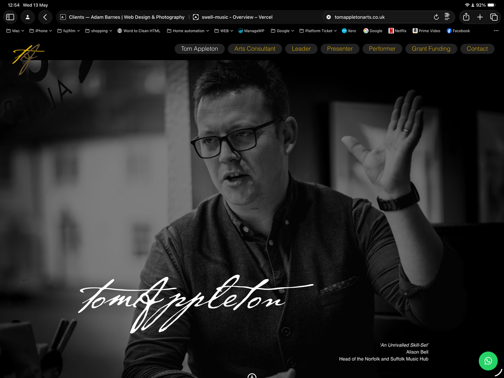
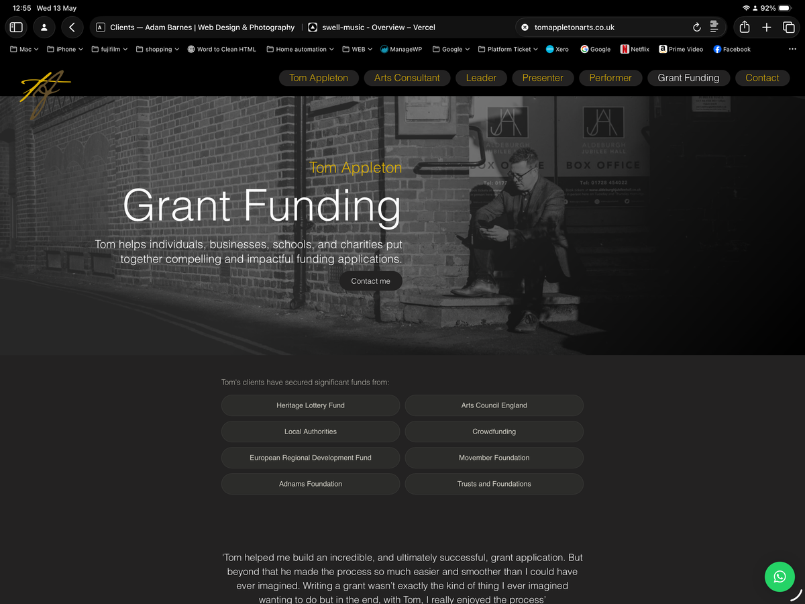

Tom Appleton by Adam
Arts consultant. Presenter. Performer. Fundraiser. Brand, website, photography and SEO built as a single piece of work — and evolved to stay ahead of how search is changing.
The brief
Tom Appleton has a career that resists a single job title. Arts consultant, education specialist, grant funding expert, presenter and performer — with credits at Carnegie Hall, the BBC Proms and the Monteverdi Choir. He works with cultural organisations, Music Education Hubs, heritage bodies, schools and community groups across Norfolk, Suffolk, Essex and beyond.
The challenge wasn't defining what Tom does. It was building a brand and digital presence capable of holding all of it together — clearly, credibly, without flattening any of it into something generic.
The work
The project began with branding. A visual identity that could carry the weight of a professional career spanning performance, consultancy, education and fundraising — without looking like it was trying to do too many things at once. That identity then became the foundation for the WordPress build, structured around six service areas and designed to let each one breathe.
All photography was shot by Adam. The images needed to work across multiple pages and contexts — Tom in conversation, Tom at work, Tom on stage. Shot in a single session, treated consistently, and used throughout the site as the primary visual layer rather than an afterthought.
Having one person responsible for brand, build and photography meant nothing had to be handed off, explained twice or compromised to fit someone else's output. The site came together as a coherent whole because it was made that way.
Evolving for modern search
As Tom's work grew, so did the site. A new grant funding page was added to surface a key part of his offer — structured with a FAQPage schema so individual questions and answers can appear directly in search results, reducing the distance between someone searching and Tom's expertise.
The full site then underwent SEO and GEO (Generative Engine Optimisation) — the discipline of making content readable not just by Google, but by the AI platforms that are increasingly where people start their searches. Every page received structured data schema, optimised titles and meta descriptions to correct character limits, internal linking review, and Rank Math knowledge graph configuration.
- Structured data schema across all six pages
- FAQPage schema on the grant funding page
- Titles and meta descriptions optimised to precise character limits
- Internal linking structured to reinforce service relationships
- Knowledge graph configured via Rank Math
- Content prepared for AI platforms: ChatGPT, Perplexity, Google AI Overviews
The outcome
Strong organic search performance with no active advertising or paid promotion — purely from the site being well-built, properly indexed and now correctly optimised. The site surfaces in both traditional search results and AI-powered platforms, positioning Tom's expertise where people are increasingly looking for it.
When someone asks a search engine — or an AI assistant — about arts consultancy, grant funding support, or music education in the East of England, Tom's site is built to be part of that answer.

